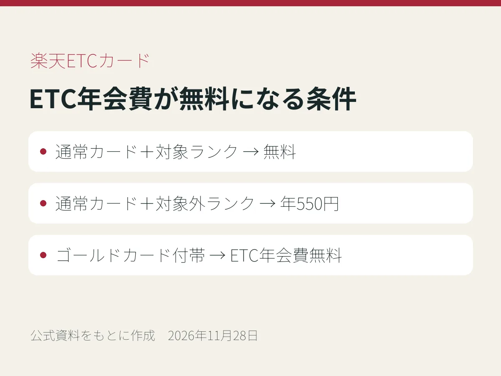
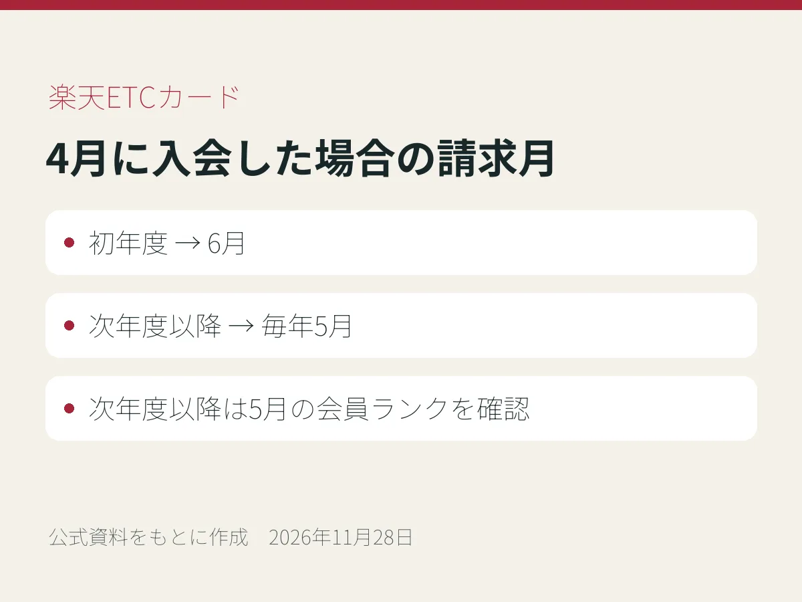

楽天ETCカードの年会費は、通常の楽天カードに付けると原則550円（税込）です。楽天PointClubのダイヤモンド・プラチナ会員は所定の判定時点で無料になります。楽天ゴールドカードなど、一部のカードでは付帯するETCカードの年会費が無料です。すでに請求された人は、現在のランクとあわせて請求月のランクを確認しましょう。条件は2026年11月28日時点です。
01年会費が無料になるカードと会員ランク
ETCカードの維持費を調べるときは、まず付帯元のクレジットカードの種類を確認します。通常の楽天カードでランクによる免除を受けるには、ダイヤモンドまたはプラチナが条件です。 楽天PointClubのゴールド会員と楽天ゴールドカードは、別の条件を指します。
| 付帯元・判定条件 | ETCカード年会費 |
|---|---|
| 通常の楽天カードでダイヤモンド・プラチナ会員 | 条件を満たす年度は無料 |
| 通常の楽天カードでゴールド・シルバー・レギュラー会員 | 550円（税込） |
| 楽天ゴールド・プレミアム・ブラックカードに付帯 | 無料 |
| 楽天ビジネスカードに付帯 | 1枚目は無料、2枚目から1枚につき550円（税込） |

一般の楽天カードと楽天ゴールドカードを、カード本体とETCカードの年会費の合計で比べます。通常カードでランク免除なしの例では0円＋550円＝550円、楽天ゴールドカードでは2,200円＋0円＝2,200円です。ETCカードを1枚持ち、ほかの優待やポイントを計算に入れない前提では、差は2,200円－550円＝1,650円です。ETCの費用を抑えることが目的なら、本体の年会費も合計して判断できます。カード本体の付帯サービスを見直している人は、楽天PINKカードと楽天カードの違いも確認できます。
02初年度と次年度以降でどの月のランクを見る？
初年度は原則、ETCカードの申込時点のランクが基準です。自動音声ダイヤルなどで申し込んだ場合は、審査後のカード発行日（カード契約日）のランクで判定されると楽天カードが案内しています。ランクが変わる時期に手続きしたときは、申込方法も振り返ってください。
次年度以降はETCカード入会月の翌月にあたる請求月で判定します。 その月の2日午前0時までに切り替わった会員ランクが基準です。入会月が4月なら、初年度の請求は翌々月の6月、次年度以降は翌月にあたる毎年5月です。請求がある場合の支払日は原則27日で、金融機関の休業日なら翌営業日になります。

03ダイヤモンド会員なのに請求されたときの確認手順
- 楽天e-NAVIの利用明細で、ETCカード年会費の請求月と金額を確認します。
- ETCカードの入会後、最初の請求にあたるか確認します。初年度なら申込日と申込方法、次年度以降なら請求月を控えます。
- 判定時点の会員ランクと照らし合わせます。今のランクしか分からず判断できないときは、明細の請求月と申込方法を整理して楽天カードに確認します。
注意楽天ビジネスカードの2枚目以降には、ダイヤモンド・プラチナ会員のランク免除が適用されません。
04よくある質問
楽天ETCカードの年会費が無料になる条件は？
通常の楽天カードでは、所定の判定時点でダイヤモンド・プラチナ会員であることが条件です。楽天ゴールドカードなどに付帯するETCカードはETCカード年会費が無料です。
今はダイヤモンド会員なのに年会費がかかることはありますか？
あります。判定時点と現在のランクが異なる場合、請求されることがあります。初年度か次年度以降かで当時のランクを調べます。
ゴールド会員でもETCカードの年会費は無料ですか？
通常の楽天カードに付ける場合、楽天PointClubのゴールド会員は550円（税込）です。楽天ゴールドカードに付帯する場合は無料です。
05まとめ
結論付帯元のカードで無料になるか確認し、ランク免除を使うなら初年度と次年度以降の判定時点を確認しましょう。
請求理由を調べるときは、明細の月と判定時点をそろえると判断できます。